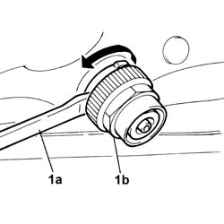
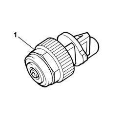

7025B12 TRUNK COMPARTMENT COVER ABUTTING END PADS/DOWELS - R.R. & ADJUSTMENT</x>
- Path
- Procedures > 70 FITTINGS > 7025 COMPARTMENT LIDS > 7025B BOOT LID > 7025B12 TRUNK COMPARTMENT COVER ABUTTING END PADS/DOWELS - R.R. & ADJUSTMENT</x>
- Kind
- repair procedure (removal / refitting; the operation number is the code)
- Applies to
- all engines; all production periods
- Interactive page
- https://sloeber94.github.io/elrnDB-lThss/en/#/841003012
Applies to: all engines; all production periods
 Removing
Removing
 Refitting
RefittingOpen the boot lid.
Turn the ring nut in an anti-clockwise direction to the end of travel position.
1. Insert a screwdriver with a flat blade (1a) in the buffer (1b) between the ring nut and the support.
Use the screwdriver to get the ring nut out completely.

Applies to: all engines; all production periods
1. Remove the buffer.
Proceed in the same way with the remaining buffer.

Applies to: all engines; all production periods
Refitting
RemovingPlace the buffer in position and place the ring nut in the end of travel position by pressing it manually.
Turn the ring nut in a clockwise direction to the end of travel position.
Proceed in the same way with the remaining buffer.
Close the boot lid placing sheets of paper between the buffers and the stops on the bodyshell.
Check that there is a slight clearance between the buffers and the stops (the sheets of paper should not tear when they are removed).
If the clearance is too small, check the alignment of the boot lid and the adjustment of the lock striker.
and repeat the check on the clearance.